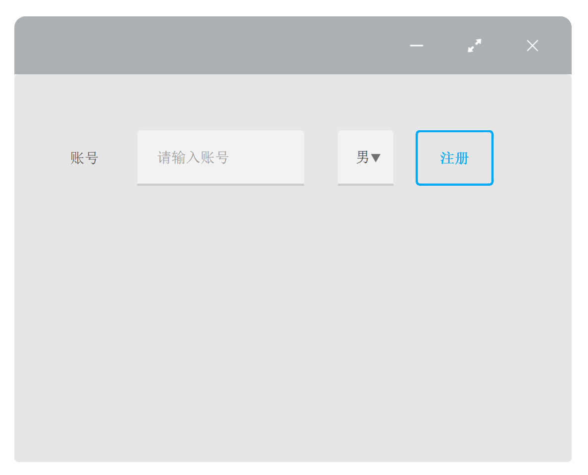
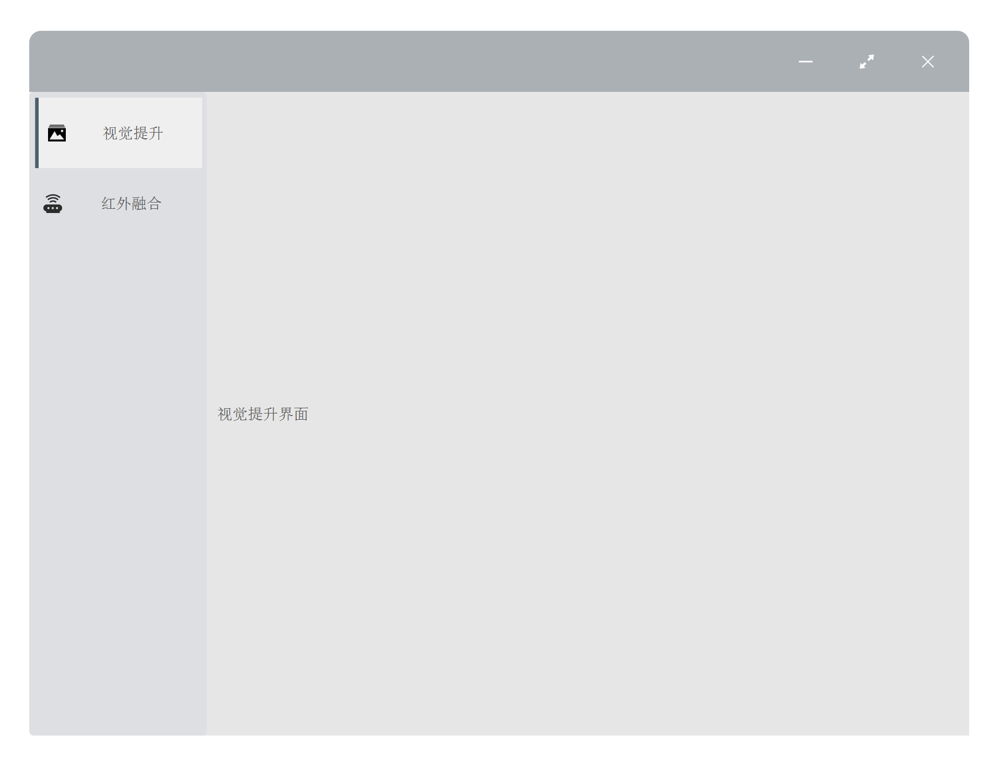
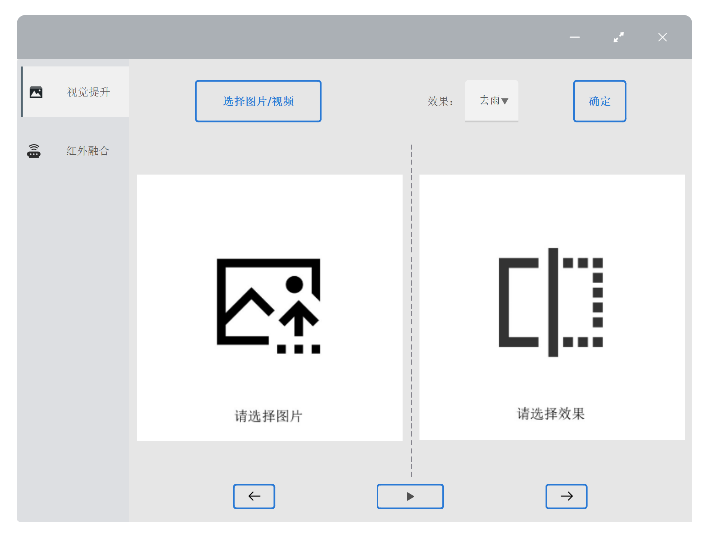
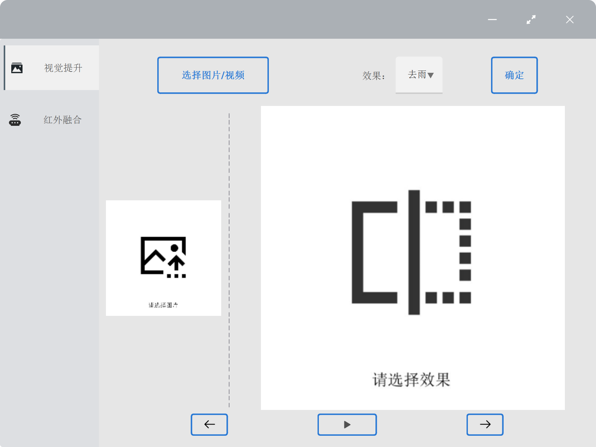
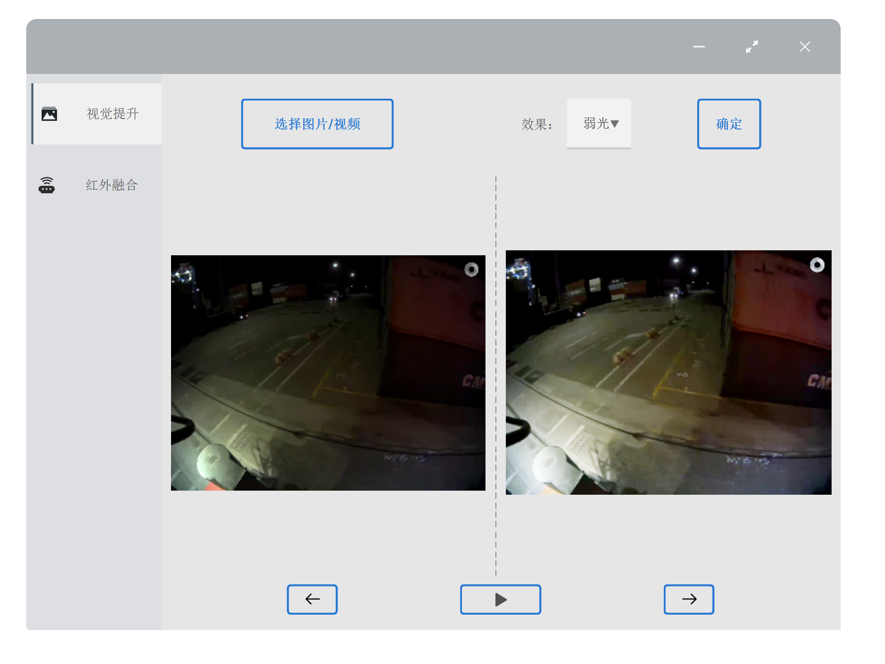

利用pyside6对python程序进行快速上手开发，实现模型的部署，请先安装pyside6相关依赖：
pip install pyside6
pip install qt-material
Pyside6基础知识
窗口框/组件
pyside6的窗口框为Widgets, 是可视化的用户界面组件。一般我们都是用Widges类创建一个主界面，然后在其基础上添加组件，创建代码如下：
w = QWidget()
# 设置窗口标题
w.setWindowTitle("PySide6程序")
# 展示窗口
w.show()
基本组件：
都位于位于 PySide6.QtWidgets 包内
- 按钮：
QPushButton，多用于点击后触发事件 - 标签：
QLabel，显示文字、图片、视频 - 输入框：
QLineEdit，输入文字 - 下拉框：
QComboBox，下拉选择某个选项
完整演示程序如下：
import sys
from PySide6.QtWidgets import QApplication, QWidget, QLabel, QPushButton, QLineEdit, QComboBox
from qt_material import apply_stylesheet
# 创建主窗口类
class MainWindow(QWidget):
def __init__(self):
super().__init__()
# 设置窗口标题
self.setWindowTitle("PySide6程序")
# 窗口的大小
self.resize(500, 300)
# 添加组件,需要在构造时添加父组件，即self
# 文本
self.label = QLabel("账号", self)
self.label.setGeometry(50, 50, 50, 50)
# 文本框
self.edit = QLineEdit(self)
self.edit.setPlaceholderText("请输入账号")
self.edit.setGeometry(110, 50, 150, 50)
# 下拉框
self.combo_box = QComboBox(self)
self.combo_box.addItem("男")
self.combo_box.addItem("女")
self.combo_box.setGeometry(290, 50, 50, 50)
# 按钮
self.btn = QPushButton("注册", self)
self.btn.setGeometry(360, 50, 70, 50)
if __name__ == '__main__':
app = QApplication(sys.argv)
w = MainWindow()
# 展示窗口
w.show()
# 设置主题色为蓝色
apply_stylesheet(app, theme='light_blue_500.xml')
# 程序进行循环等待状态，用于持久显示
sys.exit(app.exec())
信号与槽
其实就是点击按钮后，发出信号，对应执行的函数称之为槽。上述程序，我们希望在点击注册后，控制台输出账号，代码如下：
==注意==：绑定槽函数时，不用加 “()”
# 首先，在init中添加绑定函数
# 注意：这里没有()
self.btn.clicked.connect(self.click_my_btn)
# 在主窗口类中，添加click_my_btn函数
def click_my_btn(self):
print(self.edit.text())
布局
上面程序中我们使用setGeometry函数设置组件的位置，但这种方法会导致我们在放大/缩小窗口时组件位置错乱，因此我们使用布局，使界面能自适应窗口大小。
from PySide6.QtWidgets import QHBoxLayout, QVBoxLayout, QGridLayout
其中QHBoxLayout为水平布局， QVBoxLayout是垂直布局，QGridLayout为栅格布局，可互相叠加嵌套，下面来看一个例子：
frame是QFrame类的实例，可以理解成一个小窗口，方便对同一frame中的组件进行样式、布局的统一管理。
上图中，frame 1-3 内为水平布局，frame 4为栅格布局，frame 1-4 组合一起为垂直布局，忽略具体的组件，代码实现如下：
# 水平布局，传入参数为父组件，即在该组件中应用布局
self.hLayout_1 = QtWidgets.QHBoxLayout(self.frame_1)
self.hLayout_1.addWidget(菜单栏) # 添加子组件，此处为伪代码
self.hLayout_1.addWidget(历史数据)
# 栅格布局，addWidget（子组件，起始行，起始列，占的行数，占的列数）
self.gLayout_4 = QtWidgets.QGridLayout(self.frame_4)
self.gLayout_4.addWidget(%, 0, 0, 1, 1)
self.gLayout_4.addWidget(CE, 0, 1, 1, 1)
self.gLayout_4.addWidget(C, 0, 2, 1, 1)
# 垂直布局
self.vLayout = QtWidgets.QVBoxLayout(self)
self.vLayout.addWidget(self.frame_1)
self.vLayout.addWidget(self.frame_2)
self.vLayout.addWidget(self.frame_3)
self.vLayout.addWidget(self.frame_4)
无边框化
这一步是为了程序更加美观，如果没有需求可以跳过。
首先通过属性设置，将原有边框去除：
from PySide6.QtCore import Qt
self.setWindowFlag(Qt.FramelessWindowHint)
self.setAttribute(Qt.WA_TranslucentBackground) # 背景设置半透明
接着添加移动窗口功能：
# 重写QWidge中方法
# ---移动功能---
def mousePressEvent(self, event): # 鼠标左键按下时获取鼠标坐标
if event.button() == Qt.LeftButton:
self._move_drag = True
self.m_Position = event.globalPosition().toPoint() - self.pos()
event.accept()
self.setCursor(QtGui.QCursor(QtCore.Qt.OpenHandCursor))
def mouseMoveEvent(self, QMouseEvent): # 鼠标在按下左键的情况下移动时,根据坐标移动界面
if Qt.LeftButton and self._move_drag:
self.move(QMouseEvent.globalPosition().toPoint() - self.m_Position)
QMouseEvent.accept()
def mouseReleaseEvent(self, QMouseEvent): # 鼠标按键释放时,取消移动
self._move_drag = False
self.setCursor(QtGui.QCursor(QtCore.Qt.ArrowCursor))
最后，添加最大化、最小化和关闭按钮
-
定义标题栏类，包括三个按钮及其图标。直接用我写的即可，已设置好样式。
from PySide6 import QtCore from PySide6.QtGui import QIcon from PySide6.QtWidgets import QFrame, QHBoxLayout, QPushButton class CustomTitleBar(QFrame): def __init__(self, parent): super().__init__(parent) # 设置样式 self.setStyleSheet(''' QFrame{ background-color: rgb(171, 176, 181); border-top-left-radius:10px; border-top-right-radius:10px; border-bottom-left-radius:0px; border-bottom-right-radius:0px; } QPushButton{ border: none; background-color: rgb(171, 176, 181); } QPushButton:pressed{ padding-left:3px; padding-top:3px; } QPushButton:hover{ padding-bottom:3px; } ''') # 设置布局 layout = QHBoxLayout(self) layout.setSpacing(0) layout.setAlignment(QtCore.Qt.AlignRight) # 最小化按钮 btn_minimize = QPushButton(self) btn_minimize.setIcon(QIcon('resource/icons/minus.png')) btn_minimize.clicked.connect(self.parent().showMinimized) layout.addWidget(btn_minimize) # 最大化/恢复按钮 self.btn_maximize_restore = QPushButton(self) self.btn_maximize_restore.setIcon(QIcon('resource/icons/maxmize.png')) layout.addWidget(self.btn_maximize_restore) # 关闭按钮 btn_close = QPushButton(self) btn_close.setIcon(QIcon('resource/icons/close.png')) btn_close.clicked.connect(self.parent().close) layout.addWidget(btn_close) -
在主窗口类中引用
CustomTitleBar，创建对象并绑定槽函数，用于窗口的放大、缩小。# 添加状态栏 self.custom_title_bar = CustomTitleBar(self) self.custom_title_bar.btn_maximize_restore.clicked.connect(self.resize_win) # 槽函数 def resize_win(self): if self.isMaximized(): self.showNormal() self.custom_title_bar.btn_maximize_restore.setIcon( QtGui.QIcon('resource/icons/maxmize.png')) else: self.showMaximized() self.custom_title_bar.btn_maximize_restore.setIcon( QtGui.QIcon('resource/icons/minisize.png')) -
其中，图标可以在阿里矢量图标库下载，直接搜索放大、缩小等，下载后的 png 图片存到对应文件夹即可。
改进后的程序界面如下：
侧边栏
侧边栏用于显示不同板块，在点击后切换到指定的页面。主要包括左侧的侧边栏以及右侧的页面。
侧边栏类可以直接用我写的，已设置好样式：
class SideBar(QFrame):
def __init__(self, parent):
super().__init__(parent)
# 设置样式
self.setStyleSheet('''
QFrame{
background-color: rgb(221, 223, 226);
}
QListWidget {
color: Black;
background-color: rgb(221, 223, 226);
}
QListWidget::Item:hover {
background: rgb(233, 234, 236);
border-left: 3px solid rgb(76, 95, 107);
}
QListWidget::Item:selected {
background: rgb(233, 234, 236);
border-left: 3px solid rgb(76, 95, 107);
}
''')
self.list_widget = QListWidget(self)
self.list_widget.setFixedWidth(150)
self.list_widget.setSpacing(5)
layout = QVBoxLayout(self)
layout.setSpacing(0)
layout.setContentsMargins(1, 1, 0, 0)
layout.addWidget(self.list_widget)
# 添加item
img_icon = QIcon('resource/icons/img_improve.png')
self.img_item = QListWidgetItem(img_icon, '视觉提升', self.list_widget)
self.img_item.setSizeHint(QtCore.QSize(10, 60))
self.img_item.setTextAlignment(QtCore.Qt.AlignCenter)
self.img_item.setSelected(True)
red_icon = QIcon('resource/icons/red.png')
self.red_item = QListWidgetItem(red_icon, '红外融合', self.list_widget)
self.red_item.setSizeHint(QtCore.QSize(10, 60))
self.red_item.setTextAlignment(QtCore.Qt.AlignCenter)
接着，添加右侧页面，我们使用QStackedWidget，并在其中添加多个不同的Widget对应不同的组件：
# 添加右侧页面
self.stack_widget = QtWidgets.QStackedWidget(self.frame_1)
# 添加窗口部件
self.widget_1 = QWidget()
self.label_1 = QLabel("视觉提升页面")
layout_1 = QtWidgets.QVBoxLayout(self.widget_1)
layout_1.addWidget(self.label_1)
self.widget_2 = QWidget()
self.label_2 = QLabel("红外融合页面")
layout_2 = QtWidgets.QVBoxLayout(self.widget_2)
layout_2.addWidget(self.label_2)
# 添加各个widget到stack_widget中
self.stack_widget.addWidget(self.widget_1)
self.stack_widget.addWidget(self.widget_2)
self.stack_widget.setCurrentIndex(0)
通过setCurrentIndex方法设置页面，0为widget_1，1为widget_2。最后，添加槽函数，在点击左侧侧边栏按钮时切换页面。
# 主界面类中，引用侧边栏，并绑定槽函数
self.side_bar = SideBar(self.frame_1)
self.side_bar.list_widget.itemClicked.connect(self.item_clicked)
#槽函数
def item_clicked(self):
item = self.side_bar.list_widget.selectedItems()[0]
if item.text() == '视觉提升':
self.stack_widget.setCurrentIndex(0)
elif item.text() == '红外融合':
self.stack_widget.setCurrentIndex(1)
效果如下：
完整代码如下，其中from components import CustomTitleBar, SideBar的类上面代码已给出，直接创建文件复制进去即可：
import sys
from PySide6 import QtGui, QtCore, QtWidgets
from PySide6.QtWidgets import QApplication, QWidget, QLabel
from qt_material import apply_stylesheet
from PySide6.QtCore import Qt
from components import CustomTitleBar, SideBar
class MainWindow(QWidget):
def __init__(self):
super().__init__()
self.init_ui()
self._move_drag = False
def init_ui(self):
# 设置窗口标题、图标
self.setWindowTitle("视觉提升")
self.setWindowIcon(QtGui.QIcon('resource/icons/appicon.png'))
# 创建窗口类
self.frame = QtWidgets.QFrame(self)
self.frame.setObjectName("frame")
self.frame.setStyleSheet('''
QFrame { border: 0px; }
#frame{
background-color: rgb(242, 242, 242);
border-radius:10px;
}
''')
self.hLayout = QtWidgets.QHBoxLayout(self)
self.hLayout.addWidget(self.frame)
self.hLayout.setContentsMargins(0, 0, 0, 0) # 使frame完全填充界面
# 窗口的大小
self.resize(800, 600)
# 添加状态栏
self.custom_title_bar = CustomTitleBar(self)
self.custom_title_bar.btn_maximize_restore.clicked.connect(self.resize_win)
# 状态栏下半部分的窗口，frame_1
self.frame_1 = QtWidgets.QFrame(self.frame)
self.frame_1.setObjectName("frame_1")
# 添加侧边栏
self.side_bar = SideBar(self.frame_1)
self.side_bar.list_widget.itemClicked.connect(self.item_clicked)
# 添加右侧页面
self.stack_widget = QtWidgets.QStackedWidget(self.frame_1)
# 添加窗口部件
self.widget_1 = QWidget()
self.label_1 = QLabel("视觉提升界面")
layout_1 = QtWidgets.QVBoxLayout(self.widget_1)
layout_1.addWidget(self.label_1)
self.widget_2 = QWidget()
self.label_2 = QLabel("红外融合界面")
layout_2 = QtWidgets.QVBoxLayout(self.widget_2)
layout_2.addWidget(self.label_2)
# 添加各个widget到stack_widget中
self.stack_widget.addWidget(self.widget_1)
self.stack_widget.addWidget(self.widget_2)
self.stack_widget.setCurrentIndex(0)
# 布局: frame中， 状态栏（custom_title_bar）与下面部分（frame_1）
self.gLayout = QtWidgets.QGridLayout(self.frame)
self.gLayout.addWidget(self.custom_title_bar, 0, 0, 1, 1)
self.gLayout.addWidget(self.frame_1, 2, 0, 20, 1)
self.gLayout.setSpacing(0)
self.gLayout.setContentsMargins(0, 0, 0, 0)
# 布局: frame_1中，侧边栏（side_bar）与右侧部分（stackedWidget）
self.gLayout_1 = QtWidgets.QGridLayout(self.frame_1)
self.gLayout_1.addWidget(self.side_bar, 0, 0, 1, 2)
self.gLayout_1.addWidget(self.stack_widget, 0, 2, 1, 10)
self.gLayout_1.setSpacing(0)
self.gLayout_1.setContentsMargins(0, 0, 0, 0)
# # 去边框
self.setWindowFlag(Qt.FramelessWindowHint)
self.setAttribute(Qt.WA_TranslucentBackground)
# ---移动功能---
def mousePressEvent(self, event): # 鼠标左键按下时获取鼠标坐标
if event.button() == Qt.LeftButton:
self._move_drag = True
self.m_Position = event.globalPosition().toPoint() - self.pos()
event.accept()
self.setCursor(QtGui.QCursor(QtCore.Qt.OpenHandCursor))
def mouseMoveEvent(self, QMouseEvent): # 鼠标在按下左键的情况下移动时,根据坐标移动界面
if Qt.LeftButton and self._move_drag:
self.move(QMouseEvent.globalPosition().toPoint() - self.m_Position)
QMouseEvent.accept()
def mouseReleaseEvent(self, QMouseEvent): # 鼠标按键释放时,取消移动
self._move_drag = False
self.setCursor(QtGui.QCursor(QtCore.Qt.ArrowCursor))
def resize_win(self):
if self.isMaximized():
self.showNormal()
self.custom_title_bar.btn_maximize_restore.setIcon(
QtGui.QIcon('resource/icons/maxmize.png'))
self.side_bar.list_widget.setFixedWidth(150)
else:
self.showMaximized()
self.custom_title_bar.btn_maximize_restore.setIcon(
QtGui.QIcon('resource/icons/minisize.png'))
self.side_bar.list_widget.setFixedWidth(250)
def item_clicked(self):
item = self.side_bar.list_widget.selectedItems()[0]
if item.text() == '视觉提升':
self.stack_widget.setCurrentIndex(0)
elif item.text() == '红外融合':
self.stack_widget.setCurrentIndex(1)
if __name__ == '__main__':
app = QApplication(sys.argv)
w = MainWindow()
w.show()
# 设置主题色为蓝色
apply_stylesheet(app, theme='light_blue_500.xml')
# 程序进行循环等待状态，用于持久显示
sys.exit(app.exec())
至此，我们已经完成了一个基础的程序模板。后续开发可以基于这个模板上进行改造。
结合模型实现可视化
接下来，我将以视觉提升板块为例，介绍如何通过界面进行模型推理及结果的输出，包括图片及视频的处理。
界面设计
首先，我们添加以下模块：
-
上部分：
- 选择图片/视频
按钮：点击后选择电脑上的某个文件 - 选择效果
下拉框：对给定的模型，选择要应用的效果，包括去雨、去雾、弱光等 - 确定
按钮：点击后，用选择的效果对图片进行优化
- 选择图片/视频
-
中间部分
- 图片
标签：显示原图与处理后的图片，进行对比
- 图片
-
下部分：
- 视频
控件：3个按钮，对视频的暂停、前进和后退操作
- 视频
界面如下：
其中，上部分frame_up和下部分的frame_down直接添加组件+设置水平布局即可，代码如下：
# 添加右侧页面
self.stack_widget = QtWidgets.QStackedWidget(self.frame_1)
# 添加窗口部件
self.widget_1 = QWidget()
self.frame_2 = QtWidgets.QFrame(self.widget_1)
self.hLayout_1 = QtWidgets.QHBoxLayout(self.widget_1)
self.hLayout_1.addWidget(self.frame_2)
self.hLayout_1.setContentsMargins(0, 0, 0, 0)
# 从上至下 3个frame
# 1. frame_up
self.frame_up = QtWidgets.QFrame(self.frame_2)
self.choose_img_btn = QPushButton("选择图片/视频", self.frame_up)
self.choose_img_btn.setMinimumSize(150, 50)
self.pre_combobox_text = QLabel("效果：", self.frame_up)
self.pre_combobox_text.setMinimumHeight(50)
self.combobox = QComboBox(self.frame_up)
self.combobox.addItem("去雨")
self.combobox.addItem("去雾")
self.combobox.addItem("弱光")
self.combobox.setMinimumHeight(50)
self.admit_btn = QPushButton("确定", self.frame_up)
self.admit_btn.setMinimumHeight(50)
# frame_up的布局
self.up_layout = QtWidgets.QHBoxLayout(self.frame_up)
self.up_layout.addStretch(1)
self.up_layout.addWidget(self.choose_img_btn)
self.up_layout.addStretch(2)
self.up_layout.addWidget(self.pre_combobox_text)
self.up_layout.addWidget(self.combobox)
self.up_layout.addStretch(1)
self.up_layout.addWidget(self.admit_btn)
self.up_layout.addStretch(1)
# 3. frame down, 视频组件
self.frame_down = QtWidgets.QFrame(self.frame_2)
# play & pause
self.playButton = QtWidgets.QPushButton(self.frame_down)
self.playButton.setIcon(QtGui.QIcon('resource/icons/play.png'))
self.playButton.setIconSize(QtCore.QSize(12, 12))
self.playButton.setMaximumSize(QtCore.QSize(80, 30))
# left & right button
self.leftButton = QtWidgets.QPushButton(self.frame_down)
self.rightButton = QtWidgets.QPushButton(self.frame_down)
self.leftButton.setIcon(QtGui.QIcon('resource/icons/左箭头.png'))
self.leftButton.setIconSize(QtCore.QSize(19, 19))
self.rightButton.setIcon(QtGui.QIcon('resource/icons/右箭头.png'))
self.rightButton.setIconSize(QtCore.QSize(19, 19))
self.leftButton.setMaximumSize(QtCore.QSize(50, 30))
self.rightButton.setMaximumSize(QtCore.QSize(50, 30))
# frame_down布局
self.layout_down_2 = QtWidgets.QHBoxLayout(self.frame_down)
self.layout_down_2.addWidget(self.leftButton)
self.layout_down_2.addWidget(self.playButton)
self.layout_down_2.addWidget(self.rightButton)
self.layout_down_2.setContentsMargins(0, 0, 0, 0)
中间部分frame_mid通过QSplitter实现两张图片的分割布局，拖动分割线时两侧图片等比例缩放，这里有两点需要注意：
-
默认通过
QPixmap设置左右两个QLabel的图片时，图片会拉伸至label的尺寸，导致图片显示不全或变形，因此我们在设置图片之前要先将其尺寸缩放到label的尺寸，具体代码如下# 设置图片路径 self.pre_imgpath = 'resource/images/1.jpg' self.res_imgpath = 'resource/images/2.jpg' # 根据label大小缩放图片 import cv2 def scaleimg(self): def showimg(label, img_path): img_src = cv2.imdecode(np.fromfile(img_path, dtype=np.uint8), -1) ih, iw, _ = img_src.shape w = label.geometry().width() h = label.geometry().height() # keep original aspect ratio if iw / w > ih / h: scal = w / iw nw = w nh = int(scal * ih) img_src_ = cv2.resize(img_src, (nw, nh)) else: scal = h / ih nw = int(scal * iw) nh = h img_src_ = cv2.resize(img_src, (nw, nh)) frame = cv2.cvtColor(img_src_, cv2.COLOR_BGR2RGB) img = QImage(frame.data, frame.shape[1], frame.shape[0], frame.shape[2] * frame.shape[1],QImage.Format_RGB888) label.setPixmap(QPixmap.fromImage(img)) # label3为左侧框，label4为右侧框 showimg(self.label_3, self.pre_imgpath) showimg(self.label_4, self.res_imgpath) -
要实现移动分割线时，图片跟着缩放，要设置splitter的槽函数为
scaleimg，这样在每次拖动时，都会重新计算label尺寸，缩放图片，完整代码如下：# 2. frame mid, 两张图片对比， 用QSplitter分割 self.frame_mid = QSplitter(self.frame_2) self.frame_mid.setStyleSheet("QSplitter::handle {image:url(resource/images/splitter.svg);}") self.frame_mid.setHandleWidth(20) self.frame_mid.setOrientation(Qt.Horizontal) self.label_3 = QLabel(self.frame_mid) self.label_3.setAlignment(Qt.AlignCenter) self.label_3.setMinimumSize(QSize(50, 50)) self.frame_mid.addWidget(self.label_3) self.label_4 = QLabel(self.frame_mid) self.label_4.setAlignment(Qt.AlignCenter) self.label_4.setMinimumSize(QSize(50, 50)) self.frame_mid.addWidget(self.label_4) # 绑定槽函数 self.frame_mid.splitterMoved.connect(self.scaleimg) -
实现效果如下，方便更清晰观察生成后的效果图

最后，对3个frame进行布局，按照 up:mid:down = 2:10:1的比例
# 3个frame布局（up, mid, down）
self.gLayout_2 = QtWidgets.QGridLayout(self.frame_2)
self.gLayout_2.addWidget(self.frame_up, 0, 0, 2, 1)
self.gLayout_2.addWidget(self.frame_mid, 2, 0, 10, 1)
self.gLayout_2.addWidget(self.frame_down, 12, 0, 1, 1)
self.gLayout_2.setSpacing(0)
视频播放
对视频的处理如下所示：
获取视频文件地址->对视频进行抽帧->对抽帧后的图片进行推理->显示处理后的图片->利用定时器，实现视频播放
我们==假设==已完成了视频抽帧与处理，且文件结构如下，其中origin显示抽帧后的图片集合，processed显示处理后的图片，具体如何实现将在下节说明。
├─results
│ ├─videos
│ │ └─视频文件名
└─origin
└─0000.png
└─0001.png
└─0002.png
└─processed
└─0000.png
└─0001.png
└─0002.png
在此基础上，本节介绍如何对两个文件夹中的图片进行播放，形成对比，实现的效果如下：
实现原理就是设置一个多线程的定时器，每隔一段时间（fps）就执行一次next_img函数，next_img函数会把左右label的图片都切换成下一张。定时器的代码如下，用到了QThread类，想要执行的任务在run函数中实现，然后实例化对象后通过object_name.start()即可启动。
from PySide6.QtCore import QThread, Signal, QMutex, QMutexLocker
import time
import os
# 视频播放计时器
class VideoTimer(QThread):
timeSignal = Signal(str)
# 每隔1/frequent秒，切换到下一帧
def __init__(self, frequent=1):
QThread.__init__(self)
self.stopped = False
self.frequent = frequent
self.mutex = QMutex()
def run(self):
with QMutexLocker(self.mutex):
self.stopped = False
while True:
if self.stopped:
return
self.timeSignal.emit("1")
time.sleep(1 / self.frequent)
def stop(self):
with QMutexLocker(self.mutex):
self.stopped = True
def is_stopped(self):
with QMutexLocker(self.mutex):
return self.stopped
在VideoTimer中，我们定义了一个信号 timeSignal = Signal(str)，并每隔1/frequent秒发送一次“1”。在主界面类中，定义VideoTimer对象，并在每次接收到该信号时切换到下一帧。
# 定义定时器对象，并绑定信号
self.timer = VideoTimer(frequent=10)
self.timer.timeSignal.connect(self.show_video_images) # show_video_images函数在下文给出
# 初始化视频播放相关变量
STATUS_INIT = 0
STATUS_PLAYING = 1
STATUS_PAUSE = 2
self.origin_path = ''
self.processed_path = ''
self.index = 0 #当前播放的帧序号
self.status = self.STATUS_INIT
接着，定义以下函数：
- 视频停止时的重置函数
reset：停止计时器，重置播放器状态 - 播放状态切换函数
switch_video：如果当前状态为播放，改为暂停；如果为暂停，改为播放 - 播放按钮图标切换函数
icon_change：播放状态切换时，切换⏯️图标 - 帧上下切换函数
pre_img、next_img：切换至上一张/下一张帧 - 视频播放函数
show_video_images：通过调用next_img，完成视频的播放
def reset(self):
self.timer.stop()
while not self.timer.is_stopped():
time.sleep(0.5)
self.status = self.STATUS_INIT
self.index = 0
self.icon_change(1)
def switch_video(self):
if self.origin_path == '' or self.processed_path == '':
return
if self.status is self.STATUS_INIT:
self.timer.start()
self.icon_change(2)
elif self.status is self.STATUS_PLAYING:
self.timer.stop()
self.icon_change(1)
elif self.status is self.STATUS_PAUSE:
self.timer.start()
self.icon_change(2)
self.status = (self.STATUS_PLAYING,
self.STATUS_PAUSE,
self.STATUS_PLAYING)[self.status]
# 展示图片集，切换上下张
def pre_img(self):
if self.processed_path == '' or self.index == 0:
return
self.index -= 1
left_img_path = self.origin_path + '{:04d}.png'.format(self.index)
right_img_path = self.processed_path + '{:04d}.png'.format(self.index)
if not os.path.isfile(left_img_path) or not os.path.isfile(right_img_path):
time.sleep(1)
print('pre,', right_img_path)
self.pre_imgpath = left_img_path
self.res_imgpath = right_img_path
self.scaleimg()
def next_img(self):
if self.processed_path == '' or self.index == len(os.listdir(self.processed_path)) - 1:
return
self.index += 1
left_img_path = self.origin_path + '{:04d}.png'.format(self.index)
right_img_path = self.processed_path + '{:04d}.png'.format(self.index)
if not os.path.isfile(left_img_path) or not os.path.isfile(right_img_path):
return
print('next,', right_img_path)
r_img = QImage(right_img_path)
if r_img.size().width() == 0:
self.switch_video()
return
self.pre_imgpath = left_img_path
self.res_imgpath = right_img_path
self.scaleimg()
# 同时修改label_3、label_4的图片，完成视频播放
def show_video_images(self):
if self.processed_path == '' or self.index == len(os.listdir(self.origin_path)) - 1:
self.reset()
# 播放进度赶上生成进度->暂停
elif self.index == len(os.listdir(self.processed_path)) - 1:
self.switch_video()
else:
self.next_img()
最后，我们将按钮和函数绑定，实现点击中间按钮切换播放/暂停，点击左右按钮切换上下帧
self.playButton.clicked.connect(self.switch_video)
self.leftButton.clicked.connect(self.pre_img)
self.rightButton.clicked.connect(self.next_img)
模型推理
选择文件
- 首先通过
QFileDialog选择要进行处理的图像或视频 - 判断文件是视频还是图片
- 如果是视频，通过多线程对视频进行抽帧，结果保存至
/results/videos/文件名/origin
- 如果是视频，通过多线程对视频进行抽帧，结果保存至
- 展示图像
其中多线程抽帧代码如下：
from PySide6.QtCore import QThread, Signal, QMutex, QMutexLocker
import os
import cv2
# 视频抽帧线程
class Video2Img(QThread):
def __init__(self, url):
super().__init__()
self.url = url
# 创建保存文件夹
name = url.split('/')[-1].split('.')[0]
self.save_path = f'results/videos/{name}/origin/'
os.makedirs(self.save_path, exist_ok=True)
def run(self):
# 打开视频文件，参数为文件路径
cap = cv2.VideoCapture(self.url)
# 获取视频帧率和总帧数
total_frames = int(cap.get(cv2.CAP_PROP_FRAME_COUNT))
# 定义抽帧间隔
interval = 5
# 循环读取视频帧
for i in range(total_frames):
ret, frame = cap.read()
if i % interval == 0:
# 实现对每5帧进行抽取
save_img_path = os.path.join(self.save_path, '{:04d}.png'.format(int(i / interval)))
cv2.imencode('.png', frame)[1].tofile(save_img_path)
# 释放视频文件
cap.release()
如下所示，对文件名为night_1的视频，生成了对应的文件夹及抽帧结果

选择文件部分总代码如下：
def choose_image(self):
global path
path, _ = QFileDialog.getOpenFileName(self, '选择图片或视频', 'C:\\',
'Image files(*.jpg *.jpeg *.png);;Video Files (*.mp4 *.avi)')
# 如果没选择文件
if path == '':
return
# 如果当前有视频播放，停止
if self.status is self.STATUS_PLAYING:
self.reset()
# 修改label4为 “请选择效果”
self.res_imgpath = 'resource/images/2.jpg'
# 判断是视频 or 图片
# 1.视频
type = path.split('.')[-1]
if type == 'mp4' or type == 'avi':
# 如果是视频，展示控件
self.frame_down.show()
# 开一个线程，对视频抽帧，结果保存在/results/videos/文件名/origin
self.v2i = Video2Img(path)
self.v2i.start()
name = path.split('/')[-1].split('.')[0]
self.origin_path = f'results/videos/{name}/origin/'
self.processed_path = ''
img_path = self.origin_path + '0000.png'
self.timer.timeSignal.connect(self.show_video_images)
self.status = self.STATUS_INIT
while not os.path.isfile(img_path):
time.sleep(0.5)
# 2.图片
else:
self.frame_down.hide()
img_path = path
self.pre_imgpath = img_path
self.scaleimg()
最后，绑定按钮与槽函数：
self.choose_img_btn.clicked.connect(self.choose_image)
推理得到结果
为避免推理时主界面卡顿，我们同样使用多线程进行模型推理：
from PySide6.QtCore import QThread, Signal, QMutex, QMutexLocker
import time
import os
import cv2
from lowlight.low_light import lowlight_res
from dehaze.dhaze import dehaze_image
from derain.derain import derain_res
# 模型推理线程
class VisionImproved(QThread):
def __init__(self, url, data, is_dir=False):
super().__init__()
self.url = url # 图片/文件夹地址
self.data = data # 增强类型
self.dir = is_dir # 是否为文件夹里的图片（视频）
def run(self):
# 获取图片
if self.data == '弱光':
lowlight_res(self.url, self.dir)
if self.data == '去雾':
dehaze_image(self.url, self.dir)
if self.data == '去雨':
derain_res(self.url, self.dir)
# 释放视频文件
这里的lowlight、derain和dehaze代码我就不给出了，调用后要求在📂/results/videos/文件名/processed中生成结果
接着，编写img_improve函数，对VisionImproved线程进行调用
def img_improve(self):
# 获取下拉框中的值
data = self.combobox.currentText()
dic = {'弱光': 'lowlight', '去雾': 'dehaze', '去雨': 'derain'}
global path
# 图片 or 视频
type = path.split('.')[-1]
name = path.split('/')[-1].split('.')[0]
if type == 'mp4' or type == 'avi':
# 创建保存文件夹
save_path = f'results/videos/{name}/processed/'
self.processed_path = save_path
os.makedirs(save_path, exist_ok=True)
img_path = save_path + '0000.png'
# 创建线程，用于模型推理
self.vision_improved = VisionImproved(f'results/videos/{name}/', data, is_dir=True)
else:
save_path = f'results/img/{dic[data]}/'
os.makedirs(save_path, exist_ok=True)
img_path = save_path + name + '.png'
self.vision_improved = VisionImproved(path, data)
# 新开线程，用于模型推理
self.vision_improved.start()
# 未生成，暂停1秒
while not os.path.isfile(img_path):
time.sleep(1)
self.res_imgpath = img_path
self.scaleimg()
最后，绑定槽函数即可：
self.admit_btn.clicked.connect(self.img_improve)
待开发
本程序只完成了初步的视频预测，改进部分如下：
- 对图片的预测仍然是单张，后续看能否改为批量
- 每次选择效果后都需要重加载模型，浪费了一定时间。考虑把各个效果的模型整合到一个大类中，方便直接调用
- 视频播放的策略是：固定帧率，当播放进度超越生成进度时，自动暂停。后续考虑根据生成速度自动调节帧率
- 模型转成
onnx，加快推理速度 - 增加进度条，显示生成进度